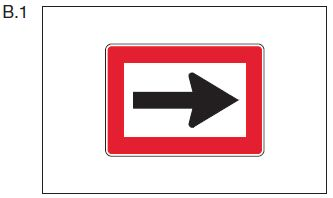
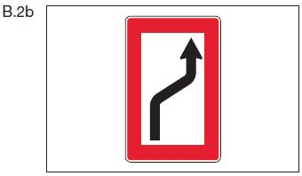
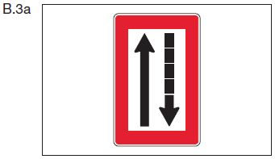
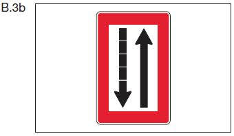
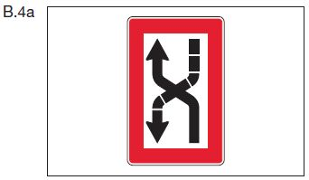

Binnenschifffahrtsstraflen-Ordnung (BinSchStrO) § 6.12Fahrt auf Strecken mit vorgeschriebenem Kurs**)
1.
Auf einer Strecke, die mit einem der Tafelzeichen B.1, B.2a, B.2b, B.3a, B.3b, B.4a oder B.4b (Anlage 7) bezeichnet ist, muss ein Fahrzeug dem durch das Tafelzeichen vorgeschriebenen Kurs folgen.





2.
Auf einer nach Nummer 1 gekennzeichneten Strecke gilt Folgendes:
a)
ein Bergfahrer, der sich am Ufer auf seiner Backbordseite hält, muss ständig die Sichtzeichen nach § 6.04 Nummer 3 zeigen;
b)
überquert ein Bergfahrer in Verfolgung des ihm durch die Tafelzeichen nach Nummer 1 vorgeschriebenen Kurses das Fahrwasser von Steuerbord nach Backbord, muss er rechtzeitig die in Buchstabe a bezeichneten Sichtzeichen setzen; überquert er das Fahrwasser in entgegengesetzter Richtung, muss er diese Sichtzeichen rechtzeitig entfernen;
c)
ein Bergfahrer darf in keinem Falle die Fahrt des Talfahrers behindern; insbesondere bei Annäherung an die Tafelzeichen B.4a oder B.4b muss er erforderlichenfalls seine Geschwindigkeit vermindern und sogar anhalten, damit der Talfahrer sein Manöver vollenden kann.
amtlicher Hinweis: Vorschrift, ausgenommen der Regelung durch das Tafelzeichen B.1 (Anlage 7), gilt weder für ein Kleinfahrzeug oder einen Verband im Sinne des § 6.02 Nummer 1 Satz 1 noch ist sie ihm gegenüber anzuwenden.